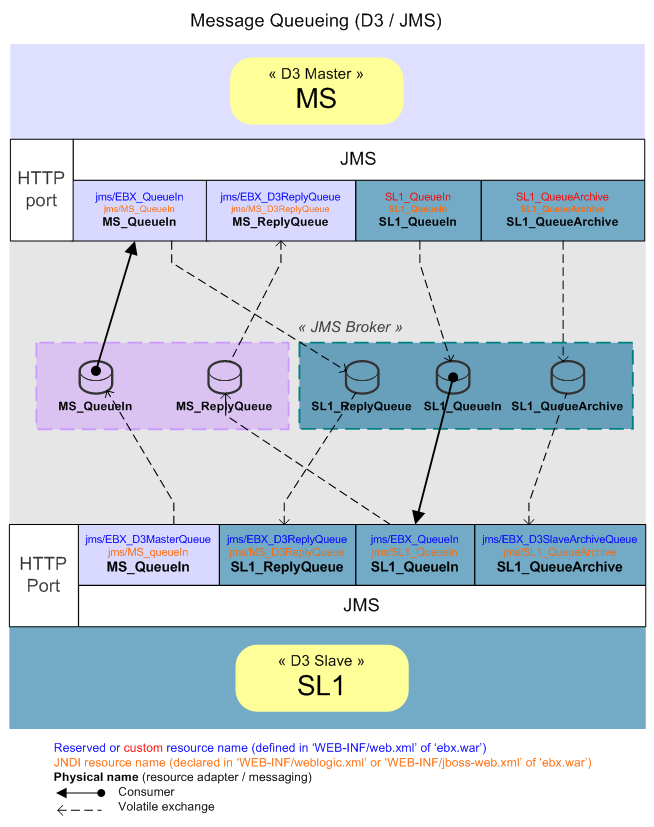

EBX5 uses the following components:
Library ebx.jar
EBX5 built-in web applications and optional custom web applications
Default user and roles directory, integrated within the EBX5 repository, or a third-party system (LDAP, RDBMS) for user authentication
See also:Supported environments
EBX5 requires several third party Java libraries. These libraries must be deployed and accessible from the class-loader of ebx.jar. Depending on the application server being used, these libraries may already be present or need to be added manually.
EBX5 repository requires a database. Generally, the required driver is configured along with a data source, if using one. Depending on the database configured in the main configuration file, one of the following drivers is required:
H2 | Version 1.2 validated. |
Oracle JDBC | Oracle 10g validated. JAR files to include: |
DB2 JDBC | DB2 UDB V8.2 validated. JAR files to include: |
SQL Server JDBC | SQL Server 2005 and SQL Server 2008 validated. JAR file to include: |
PostgreSQL | PostgreSQL 8.3 validated. Contact Orchestra Networks Professional Services if considering PostgreSQL 8.4. JAR file to include: |
The libraries for JavaMail 1.2 email management and the JavaBean Activation Framework are required.
The following libraries are used by email features in EBX5. See Activating and configuring SMTP and e-mails for the details of the configuration.
mail.jar, version 1.2, from December 5, 2000
smtp.jar, version 1.2, from December 5, 2000
pop3.jar, version 1.2, from December 5, 2000
activation.jar, version 1.0.1, from May 21, 1999, or the maintenance release version 1.0.2, from August 28, 2002
These libraries are required if your web applications use SSL features.
jsse.jar: http://www.oracle.com/technetwork/java/download-141865.html
ibmjsse.jar: http://www.ibm.com/developerworks/java/jdk/security/
See also:EBX5 main configuration file
When using JMS, a version 1.1 or higher is required.
Depending on whether a Java EE application server or a Servlet/Java Server Pages (JSP) implementation is being used, the library required is as follows:
For an application server based on Java EE (Java Platform Enterprise Edition), the required JMS provider library is available by default. See http://www.oracle.com/technetwork/java/javaee/overview for more information.
For a Servlet/Java Server Pages (JSP) implementation using Java SE (Java Platform Standard Edition), for example Apache Tomcat, a JMS provider library such as Apache ActiveMQ may need to be added. See http://www.oracle.com/technetwork/java/javase/overview for more information.
See also:EBX5 main configuration file
EBX5 provides pre-packaged EARs that you may deploy directly if your enterprise has no custom web applications to add as EBX5 modules. If you are deploying custom web applications as EBX5 modules, it is recommended that you rebuild an EAR containing your custom modules packaged at the same level as the built-in web applications.
For more information, see the note on repackaging the EBX5 EAR at the end of this chapter.
EBX5 includes the following built-in web applications.
| EBX5 entry point, which handles the initialization upon start up. See Deployment details for more information. |
| EBX5 root web application. Any application that uses EBX5 requires the root web application to be deployed. |
| EBX5 user interface web application. |
| EBX5 data model assistant, which helps with the creation of data models through the user interface. Note: EBX5 modeling tool requires the deployment of |
| EBX5 data services web application. Data services allow external interactions with data spaces, data workflows, and the user and roles directory in the EBX5 repository using the SOAP and Web Services Description Language (WSDL) standards. Note: The EBX5 web service generator requires the deployment of the |
Every custom web application that is defined as an EBX5 module must be registered with the ModulesRegister.registerWebApp() API. Registration of modules is explained in the EBX5 modules chapter.
This section describes the various options that are offered for the deployment of ebx web application. These options are available in its deployment descriptor (the file WEB-INF/web.xml) and are complemented by the various properties defined in the main configuration file.
The web application 'ebx' (packaged as ebx.war) contains the servlet FrontServlet, which handles initialization and serves as the single user interface entry point for the EBX5 web tools.
In the file WEB-INF/web.xml of the web application 'ebx', the following elements must be configured for FrontServlet:
| To ensure that |
|
|
FrontServlet must be authorized to access other contexts, such as ServletContext.
For example, on Tomcat, this configuration is done using the attribute crossContext in the configuration file server.xml, as follows:
<Context path="/ebx" docBase="(...)" crossContext="true"/>
When several EBX5 web components are to be displayed on the same HTML page, for instance using iFrames, it may be required to disable the management of cookies due to limitations present in certain Internet browsers.
For example, on Tomcat, this configuration is provided by the attribute cookies in the configuration file server.xml, as follows:
<Context path="/ebx" docBase="(...)" cookies="false"/>
The JDBC data source for EBX5 is specified in the deployment descriptor WEB-INF/web.xml of the ebx web application as follows:
Reserved resource name | Description |
|---|---|
| JDBC data source for EBX5 Repository. Java type: |
SMTP and email is declared in the deployment descriptor WEB-INF/web.xml of the ebx web application as follows:
Reserved resource name | Description |
|---|---|
| Java Mail session used to send e-mails from EBX5. Java type: |
The JMS connection factory is declared in the deployment descriptor WEB-INF/web.xml of the ebx web application as follows:
Reserved resource name | Description | Required |
|---|---|---|
| JMS connection factory used by EBX5 to create connections with the JMS provider configured in the operational environment of the application server. Java type: | Yes |
To configure data services to use JMS instead of the default HTTP, you must configure the JMS connection factory and the following queues, declared in the WEB-INF/web.xml deployment descriptor of the ebx web application. This is the only method for configuring JMS for data services.
See JMS for more information on the associated EBX5 main configuration properties.
Reserved resource name | Description | Required |
|---|---|---|
| JMS queue for incoming messages sent to EBX5 by other applications. Java type: | Yes |
| JMS queue for failures. It is used for incoming messages for which an error has occurred. This allows replaying these messages if necessary. Java type: Note: For this property to be read, the main configuration must also activate the queue for failures through the property | No |
To configure D3 to use JMS instead of the default HTTP and TCP protocols, you must configure the JMS connection factory and the following queues, declared in the WEB-INF/web.xml deployment descriptor of the ebx web application.
Reserved resource name | Description | Master node | Slave node |
|---|---|---|---|
| D3 master JMS queue (only for D3 mode 'slave' or 'hub'). It specifies the name of the communication queue with master D3 node. Java type: | N/A | Required |
| D3 Reply JMS queue (for all D3 modes except 'single' mode). It specifies the name of the reply queue for D3 node conversation. Java type: | Required | Required |
| D3 slave Archive JMS queue (only for D3 mode 'slave' or 'hub'). It specifies the name of slave transfer archive queue used by master D3 node. Java type: | N/A | Required |
| D3 slave Communication JMS queue (only for D3 mode 'slave' or 'hub'). It specifies the name of the slave communication queue used by master D3 node. If this property is not specified, EBX5 uses Java type: | N/A | Optional |
If D3 enables JMS, then the deployment descriptor of the master node must specify the specific queues associated with each slave. The following table provides an example of the additional entries that are needed for communicating with a slave node "SL1" (the next section describes the environment on which these settings are declared).
Resource name for slave "SL1" | Description | Required |
|---|---|---|
| Queue corresponding to Java type: | One of either this queue or the queue 'SL1_D3SlaveCommunicationQueue' must be defined |
| Queue corresponding to Java type: | Yes |
| Queue corresponding to Java type: | One of either this queue or the queue 'SL1_QueueIn' must be defined |

EBX5 can be deployed on any Java EE application server supporting at least Servlet 2.3. The following documentation on Java EE deployment and installation notes are available:
EBX5 does not include a cache synchronization mechanism, thus it cannot be deployed into a cluster of active instances.
See Technical Architecture for more information.